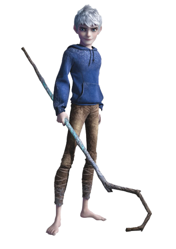

Jackson Overland Frost, mais conhecido como Jack Frost, é o principal protagonista da serie, e um sobrenatural imortal sendo muito parecido com os Guardiões. Ao contrário dos outros, ele é um solitário, o rebelde clássico sem causa, sarcástico e travesso. Como manifestação do inverno, Jack Frost é capaz de manipular gelo e neve. Ele é o espírito de travessuras e caos personificado, mas quando descobrir o propósito por trás de seus poderes, ele se tornará um verdadeiro guardião, representando "Diversão".
saiba mais
